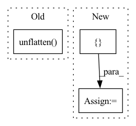

Pattern ID :34060
Before Change
f"After Flattening and after emptying param group {i} cache")
// set model fp16 weight to slices of flattened buffer
updated_params = self.unflatten( self.fp16_groups_flat[i],
self.fp16_groups[i])
for p, q in zip(self.fp16_groups[i], updated_params):
p.data = q.data
//divide the flat weights into near equal partition equal to the data parallel degreeAfter Change
self.dtype = self.optimizer.param_groups[0]["params"][0].dtype
self.round_robin_fp16_groups = []
self.round_robin_fp6_indices = []
// padding on each partition for alignment purposes
self.groups_padding = []
// loop to deal with groupsIn pattern: SUPERPATTERN
Frequency: 3
Non-data size: 3
Instances Fragment ID: 97406494
Project Name: microsoft/deepspeed
Commit Name: ee4deabd75331e9c1bb1383b2068fdebcb33ed08
Time: 2021-05-15
Author: olruwase@microsoft.com
File Name: deepspeed/runtime/zero/stage2.py
M Class Name: FP16_DeepSpeedZeroOptimizer
N Class Name: FP16_DeepSpeedZeroOptimizer
M Method Name: __init__(21)
N Method Name: __init__(21)
M Parent Class: object
N Parent Class: object
M File Name: deepspeed/runtime/zero/stage2.py
N File Name: deepspeed/runtime/zero/stage2.py
M Start Line: 161
M End Line: 236
N Start Line: 161
N End Line: 282
Before Change
def forward(self, x: Tensor) -> Tensor:
// x: [..., I]
x = x.unflatten( -1, (self.groups, self.ws)) // [..., G, I/G]
x = torch.einsum("...gi,...gih->...gh", x, self.weight) // [..., G, H/G]
x = x.flatten(2, 3) // [B, T, H]
return xAfter Change
def forward(self, x: Tensor) -> Tensor:
// x: [..., I]
new_shape = list(x.shape)[:-1] + [ self.groups, self.ws = x.view(new_shape)
// The better way, but not supported by torchscript
// x = x.unflatten(-1, (self.groups, self.ws)) // [..., G, I/G]
x = torch.einsum("...gi,...gih->...gh", x, self.weight) // [..., G, H/G] Fragment ID: 97406493
Project Name: rikorose/deepfilternet
Commit Name: 5d06603252b187a1f1c1c56859bb945ca3a16603
Time: 2022-10-18
Author: Rikorose@users.noreply.github.com
File Name: DeepFilterNet/df/modules.py
M Class Name: GroupedLinearEinsum
N Class Name: GroupedLinearEinsum
M Method Name: forward(2)
N Method Name: forward(2)
M Parent Class: nn.Module
N Parent Class: nn.Module
M File Name: DeepFilterNet/df/modules.py
N File Name: DeepFilterNet/df/modules.py
M Start Line: 724
M End Line: 724
N Start Line: 724
N End Line: 725
Before Change
B, P, N, _ = part_pcs.shape
// shared-weight encoder
pcs = part_pcs.flatten(0, 1) // [B*P, N, 3]
pc_feats = self.encoder(pcs).unflatten( 0, (B, P)) // [B, P, C]
// transformer feature fusion
pc_feats = self.corr_module(pc_feats, part_valids) // [B, P, C]
// MLP predict posesAfter Change
feats = torch.cat([pc_feats, inst_label], dim=-1) // [B, P, C"]
quat, trans = self.pose_predictor(feats)
pred_dict = {
"quat": quat, // [B, P, 4]
"trans": trans, // [B, P, 3]
"pre_pose_feats": feats, // [B, P, C"]
}
return pred_dict
def training_step(self, data_dict, batch_idx):
loss_dict = self.forward_pass(data_dict, mode="train") Fragment ID: 97406497
Project Name: wuziyi616/multi_part_assembly
Commit Name: cb586c4febe6508914e90c32a5b69e70aecbbc4e
Time: 2022-03-07
Author: dazitu616@gmail.com
File Name: multi_part_assembly/models/pn_transformer/network.py
M Class Name: PNTransformer
N Class Name: PNTransformer
M Method Name: forward(2)
N Method Name: forward(4)
M Parent Class: pl.LightningModule
N Parent Class: pl.LightningModule
M File Name: multi_part_assembly/models/pn_transformer/network.py
N File Name: multi_part_assembly/models/pn_transformer/network.py
M Start Line: 71
M End Line: 93
N Start Line: 83
N End Line: 107